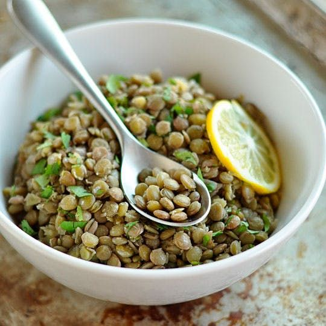

Lentils!

What about lentils?
Lentils are cheap and nutritious food source and you can make a lot of food out of them provided you have some idea on how to cook. They come in a few different types but are all very affordable and are delicious! You can easily buy 1lb at a store for under $2.
Lentils come in different types and each come with their uses and flavor. They include:
- Brown Lentils
- Red Lentils
- Green/French Lentils
- Yellow Lentils
- Black/Beluga Lentils
Recipes
Okay here is the real reason why I'm making this so I can learn how to do this coding stuff but also find some recipes for me to try since I'm sitting on 20lbs of lentils and another 25lbs of rice. But whatever...let's find some delicious recipies for me to try!
The bare basics of boiled Lentils

Pretty simple stuff right here. Just lentils and boil them for about 15-20 minutes. Every cup of lentils should be given 3 cups of water. Once it's finished cooking add salt and enjoy the bare minimum.
A lentil soup
Another simple easy meal that can pretty much work without much effort. Seems like the recommended amount of lentils to water is 1:4 cups. Just throw in some salt/stock and a bunch of vegtables and maybe some meats and you'll have something edible.